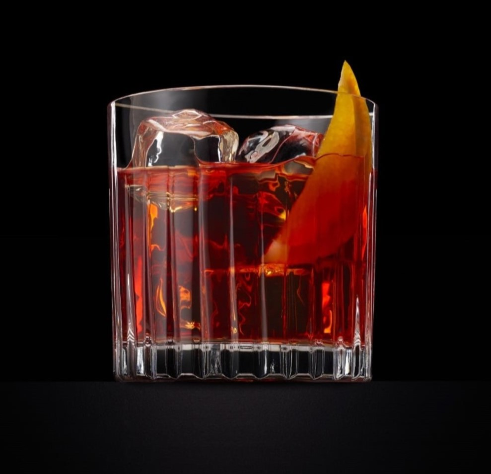
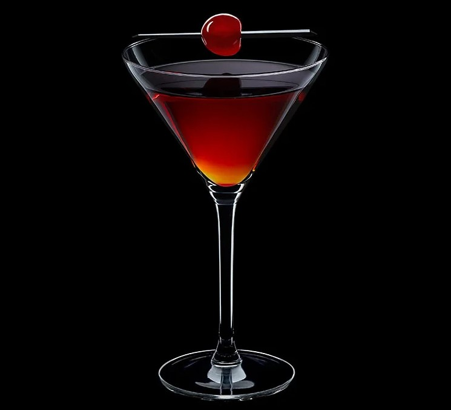
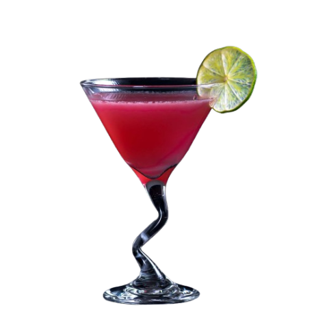
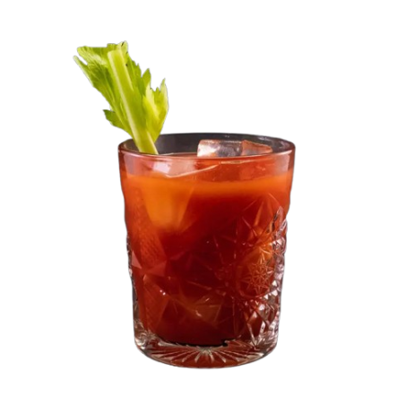

Old Fashioned
O Old Fashioned é considerado um dos primeiros coquetéis documentados na história da mixologia. Criado no início do século XIX, sua receita simples — whisky, açúcar, Angostura e um toque de água — reflete a essência dos primeiros drinks da era moderna. Ele se popularizou no Pendennis Club, em Louisville, Kentucky, e se tornou um símbolo da sofisticação clássica.

Martini
Origem: Provável influência italiana e americana, final do século XIX O Martini é sinônimo de elegância e foi imortalizado por figuras como James Bond. Acredita-se que tenha evoluído do Martinez, um coquetel feito com gin, vermute doce e bitters. No entanto, a versão moderna com gin e vermute seco se consolidou na década de 1920, tornando-se um ícone de bares sofisticados.

Margarita
Origem: México, década de 1930 ou 1940 A história da Margarita tem várias versões, mas a mais aceita é que ela foi criada para uma socialite chamada Margarita Sames, que misturou tequila, Cointreau e suco de limão durante uma festa no México. Outra teoria é que o drink surgiu como uma adaptação da "Daisy", um coquetel popular da época.

Mojito
Origem: Cuba, século XVI O Mojito tem raízes históricas que remontam ao pirata inglês Francis Drake, que teria misturado rum com limão e hortelã como remédio. No século XX, o Mojito se tornou um dos drinks favoritos de Ernest Hemingway, que ajudou a popularizá-lo no icônico bar La Bodeguita del Medio, em Havana.

Negroni
Origem: Itália, 1919 Criado em Florença, o Negroni nasceu quando o Conde Camillo Negroni pediu ao bartender Fosco Scarselli para reforçar seu habitual Americano (Campari, vermute tinto e água com gás) substituindo a água com gás por gin. O resultado foi um drink amargo, forte e sofisticado, que virou um clássico.

Daiquiri
Origem: Itália, 1919 Origem: Cuba, final do século XIX O Daiquiri foi criado pelo engenheiro americano Jennings Cox, que trabalhava em uma mina de ferro em Daiquirí, Cuba. Ele misturou rum, limão e açúcar para criar uma bebida refrescante. Mais tarde, o drink se tornou um dos preferidos de Hemingway, que pediu uma versão sem açúcar chamada "Papa Doble".

Manhattan
Origem: Nova York, década de 1870 Diz a lenda que o Manhattan foi criado no Manhattan Club, em Nova York, a pedido de Jennie Jerome (mãe de Winston Churchill). A mistura de whisky, vermute doce e Angostura se tornou um clássico dos coquetéis americanos e um símbolo de sofisticação nos bares da cidade.

Whiskey Sour
Origem: Nova York, década de 1870 Origem: Estados Unidos, meados do século XIX O Whiskey Sour foi oficialmente registrado em 1862 no livro de Jerry Thomas, um dos primeiros bartenders famosos. A mistura de whisky, suco de limão e açúcar remonta às bebidas que marinheiros consumiam para prevenir escorbuto, tornando-se uma das combinações mais simples e equilibradas da coquetelaria.

Cosmopolitan
Origem: Estados Unidos, década de 1970 Popularizado na década de 1990 pela série Sex and the City, o Cosmopolitan já existia há alguns anos. A versão moderna, feita com vodka, Cointreau, suco de cranberry e limão, foi criada por Toby Cecchini em Nova York, inspirada em uma receita anterior vinda da Flórida.

Piña Colada
Origem: Porto Rico, 1954 A Piña Colada foi criada no Caribe Hilton Hotel, em San Juan, pelo bartender Ramón "Monchito" Marrero. Combinando rum, leite de coco e suco de abacaxi, o drink logo se tornou a bebida oficial de Porto Rico. Sua popularidade explodiu na década de 1970, simbolizando o paraíso tropical.
/i.s3.glbimg.com/v1/AUTH_5dfbcf92c1a84b20a5da5024d398ff2f/internal_photos/bs/2022/s/e/pA6e55SWWUK4ixidaLpw/gettyimages-1246697541.gif)
Caipirinha
Origem: Brasil, século XX A Caipirinha tem origens controversas, mas acredita-se que tenha sido criada no interior de São Paulo como um remédio para gripes, combinando cachaça, limão, açúcar e gelo. Com o tempo, virou o coquetel mais emblemático do Brasil, conquistando paladares ao redor do mundo.

Bloody Mary
Origem: França/EUA, década de 1920 Criado no Harry’s New York Bar, em Paris, o Bloody Mary combina vodka, suco de tomate, molho inglês, tabasco e temperos. Seu nome é associado à rainha Maria I da Inglaterra, famosa por sua brutalidade. O drink se tornou um clássico dos brunches, sendo conhecido por suas propriedades “curativas” para ressacas.